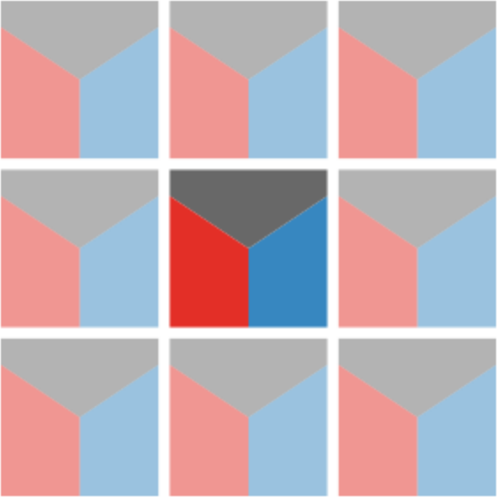

Note: You can take a closer look at any of the maps in this post simply by clicking on them.
I’ve recently talked a lot (and will again…) about using tiling as an approach to present complex multivariate data in single map views. In this post I look at a relatively simple example of this problem from a project I’ve been working on recently—just three variables—where, it might be that a different approach is warranted, although as I think will become clear, the regularities of tiled patterns are useful regardless of whether the final result is technically (or even remotely) a tiling or not!
I’m deliberately not going to say what the data represent. Suffice to say we have three variables, shown below for a chunk of New Zealand. From left to right, these are a resource potentially at risk, and two risk factors. The data preparation involved in assembling these risk factors is a whole story in itself, which I might get into some other time. For now, suffice to say, we’ve been careful to stick with colouring these three elements consistently (black, red, blue) as that helps a great deal in keeping some rather complicated data organised in our heads!
You’ll see also that we’ve calculated our three facets of the problem in a consistent geographic frame of reference, namely 10km grid squares. That’s 10×10km, i.e. 100km2 and not 10km2 as people so often seem to garble square units. [I was delighted to see this bugbear of mine picked up in a recent XKCD comic. Go. There. Now.]
Tilings by squares
It’s fine looking at the three datasets in parallel, but what’s really of interest is where high values of all three variables co-exist, and in given places which, if any of them, are low. Presenting more than one variable at once is exactly what our efforts in map tiling have been all about.
Since only the red and the blue are risk factors one option using tiles is square tiles cut in half diagonally and choropleth coloured in the same manner as above. This gives us a map like this:

That seems fine, although… it might cause some unnecessary alarm given how almost the whole mapped area seems at great risk.1 So, can we also show the at-risk variable to offset that effect?
 One option is three variable tilings. You can slice a square into three equal sized elements rather easily. It turns out that if you cut from the centre of a square (or for that matter any regular polygon) to three points spaced at equal distances along its perimeter, then the magic of geometry guarantees the slices will be of equal size.2 Pop over to my handy dandy mapweaver app (I recommend opening that link in a new tab) and you can see what this looks like up close, by selecting the square-slice 3 tiling and setting Offset to 1. Mapping with this tileable unit gives us a map like the one below.
Because we’ve used the same colours here we can still tell which variable is which, although the tiling’s shapes tend to draw our eye to the cube-like arrangement of one blue tile on the left and one red tile on the right, where these are actually the data values from neighbouring grid cells, and should not strictly be paired with one another!
We could fix this with ‘insetting’ as shown in the tileable unit to the left, although for me this is a little unsatisfactory as a pattern, and I leave generating such a map as an exercise for the reader.3 Another problem with this tiling is that the different shapes of the three tiles, which should perhaps in theory help us with telling one variable from another are distracting. Nice idea in theory then, but maybe not so great in practice.
But squares are so square
Yes, you’re right. Squares are like, totally square. Hexagons are much sexier, even if we’re maybe all a bit over the hexbin moment and they are no longer the basis for the coolest discrete global grid systems.4
In the current application where we are interested in three variables, hexagons also have the convenient feature of a number of sides divisible by three so we can slice them into three pieces more nicely than squares. That approach yields a pleasingly cubic map:
 We could even make our slices pentagonal and get the best of both worlds. The problem with hexagons in this application is that the repeating hexagon shape doesn’t have a consistent mapping onto out underlying square gridded data, so which underlying data any particular group of tiles represents is unclear, and it’s even possible we are double counting some data and missing others. We could go back and redo all the analysis, and of course all these numbers are estimates and subject to all kinds of variation as we move data around from geometry to geometry anyway. If we really love the hex output map, then probably we should redo the analysis for hexagonal output areas. For now, I’m going to move on and back to another way to present these three variables using square tiles cut diagonally.
We could even make our slices pentagonal and get the best of both worlds. The problem with hexagons in this application is that the repeating hexagon shape doesn’t have a consistent mapping onto out underlying square gridded data, so which underlying data any particular group of tiles represents is unclear, and it’s even possible we are double counting some data and missing others. We could go back and redo all the analysis, and of course all these numbers are estimates and subject to all kinds of variation as we move data around from geometry to geometry anyway. If we really love the hex output map, then probably we should redo the analysis for hexagonal output areas. For now, I’m going to move on and back to another way to present these three variables using square tiles cut diagonally.
Back to square two
The map below borrows an idea from the interesting value-by-alpha approach proposed some years ago by Rob Roth and others.5
I’ve never entirely got along with value-by-alpha maps. This is partly because I’m not sure they work especially well on white backgrounds and I’m not cool enough for maps with dark backgrounds, and partly because I struggle to get the alpha (transparency/opacity) channel and all the associated blending modes to play nice. Somehow or other the alpha channel never has quite the effect I hope for and expect it to have in practice.
I made the map above by calculating the colours in QGIS. You set the layer symbology to Simple Fill and then edit the expression for the colour to something like the below:
color_rgba(if("var2" > 0, 204, 255),
if("var2" > 0, 0, 255),
if("var2" > 0, 0, 255),
"var1" * 255)If you’ve ever used the expression editing in QGIS you’ll know it’s not a lot of fun to work with. Also, if you’re really paying attention, you’ll realise that this isn’t applying a colour ramp to var2 but simply turning it on if var2 is above 0 (which it is across most of the map, if you refer back to the first couple of maps in this post). It’s ‘dampening’ down the red colour by applying an alpha channel based on var1 the at-risk attribute. So this is almost like doing GIS overlay cartographically. The dimmed out reds and blues are of less concern because the resource at-risk is less exposed in those dimmed out areas. It would be possible using a more complex expression than that above to put the reds and blues on colour ramps, although given the transparency effect I think that the approach shown is better.
Just show all the data!
I think the last example is interesting, and of the tiling-based approaches shown probably the most successful—although success will ultimately lie in the eyes of the end user of these maps and datasets.
But what that last example got me thinking is, “why not just show all the data?” The three variables are on different numerical scales, but if we rescale all three so they range from 0 to 1 then by setting symbology in QGIS to No Symbols and instead using the Diagrams option, we can construct a three variable histogram6 in each of the 10km square cells, after some rather annoying fiddle to get the barcharts to line up properly.7 By sticking with the red-blue-grey colouring it’s easy to tell which bar is which.
Anyway, after some frustrating experiences with the options in the Diagrams option I wound up with this map:
This slice of the map doesn’t really do it justice, because what’s interesting about this map (to my tiling-attuned eye) is how the regular arrangement of barchart glyphs8 itself conveys information about the overall pattern. That is clearer when you see the whole map:
Where there is more ‘ink on the page’ or ‘colour on the screen’ are areas of greater possible concern. At the same time that you can see those overall patterns, it is easy to zoom in on particular areas for a closer look to confirm exactly why a particular area might be of interest. And because this representation is based on barcharts and does not depend on the vagaries of how colour is perceived but on estimation based on the heights of bars, which we are generally better at than reading values based on colours, the underlying data is likely to be conveyed more reliably by this map than some of the others here.
Tiles and glyphs: the same or different?
There isn’t really one ‘right’ map. Any of the maps shown in this post could I think be useful depending on the exact interest of the end user. We’ll find out more about that in the weeks ahead, and it’s entirely possible they will simply want all the underlying data assembled into some kind of interactive web map (perhaps even a GIS…).
I still think single map summaries of multivariate data have real value, and their design is an ongoing challenge. I really like the tiling approach I’ve been developing over the last couple of years, but in this case, I think that the barchart glyphs are probably a better overall solution. Saying that, I’ve learned from my adventures in tiling that repeating arrangements are an incredibly powerful tool for revealing patterns in geographical data, and it’s that as much as the individual glyphs that is doing a lot of the ‘information transmission’ work here.
It is also worth pondering the question of when a tiling becomes an arrangement of glyphs once we allow for ‘insetting’ as shown in the three slice options above. Insetting the repeating tileable unit when the inset distance is small makes it easier to tell which tile is which in the overall map arrangment. But as shown below, as the inset gets wider, the tileable unit in effect becomes a glyph!


{kind=link}
{kind=link}
{kind=link}
{kind=link}
{kind=link}
{kind=link}
{kind=link}
{kind=link}
{kind=link}
In the latest version of the weavingspace module9 the option to scale, rotate, and skew tileable units independently of their spacing within the tiling has been enabled, which can support this perspective. This is certainly a new dimension to the approach that I expect to explore further in other projects.

Footnotes
Although, it’s really not: all those areas where there is no blue have very low risk associated with that factor and if we need both to be present then they are OK.↩︎
A potentially useful tip for children’s parties. As for the geometry, it’s all about how the area of a triangle is given by \(A=\frac{1}{2}bh\).↩︎
üòâ‚Ü©Ô∏é
That honour now belongs to Carto’s A5geo pentagon based system in case you were wondering. I am of course using the word ‘coolest’ in the most nerdy and loosest of senses.↩︎
Not technically a histogram, more a bar chart, but now I am being nitpicky.↩︎
By default QGIS hovers them over the area centroid, which is fine… and makes complete sense if the areas are typical irregular polygons. For this gridded arrangement I wanted the barchart baselines to line up and that involves some more expressions to be entered to offset barcharts from the centroid depending on the values in the data. The barcharts also have to be drawn in Map Units which conjures up an alarming image of giant 3km wide bars rectangles the length and breadth of the country.↩︎
This paper provides a good overview of glyph-based visualisation: Borgo R, J Kehrer, DHS Chung, E Maguire, RS Laramee, H Hauser, MO Ward and M Chen. 2013. Glyph-based visualization: foundations, design guidelines, techniques and applications. In 34th Eurographics 2013: Girona, Spain - State of the Art Reports, ed. M Sbert and L Szirmay-Kalos, 39-63. doi: 10.2312/conf/EG2013/stars/039-063.↩︎